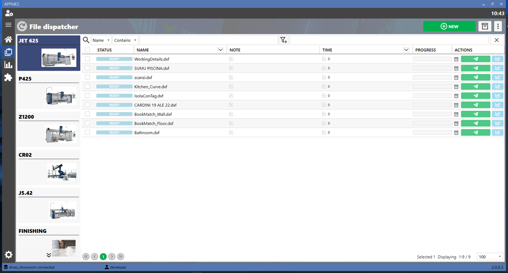
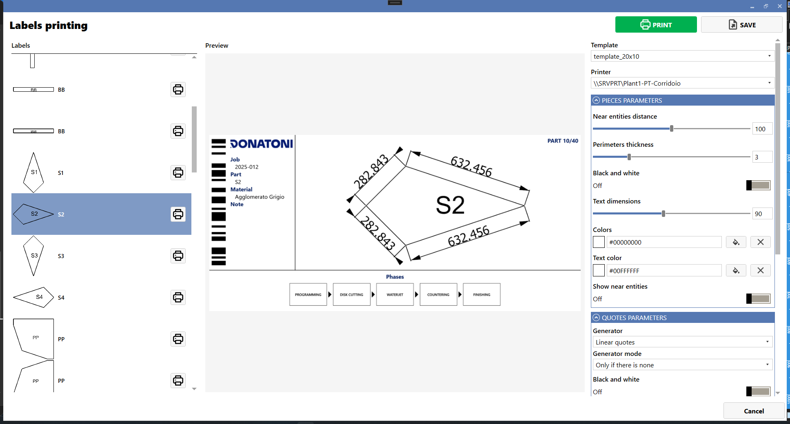
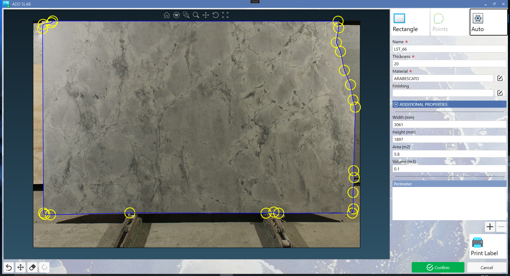
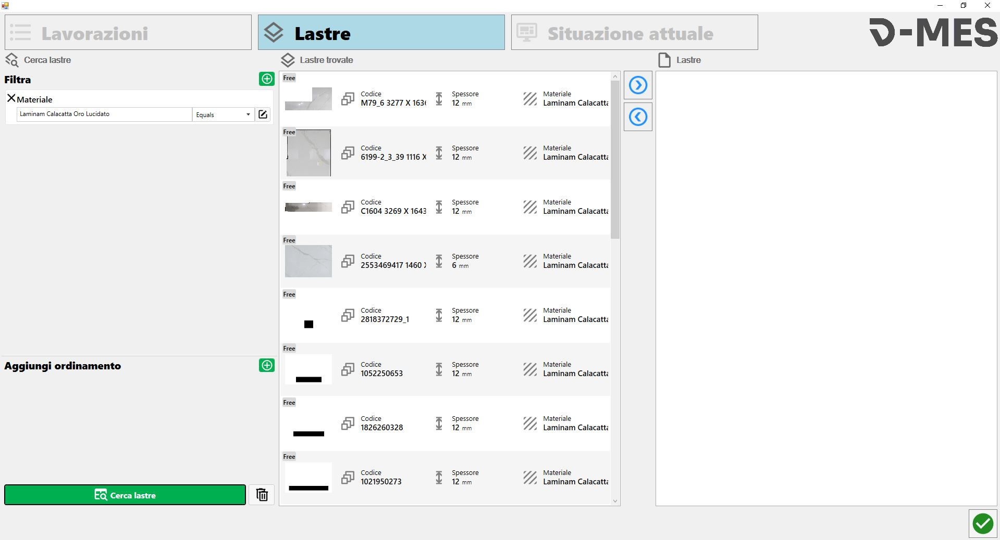
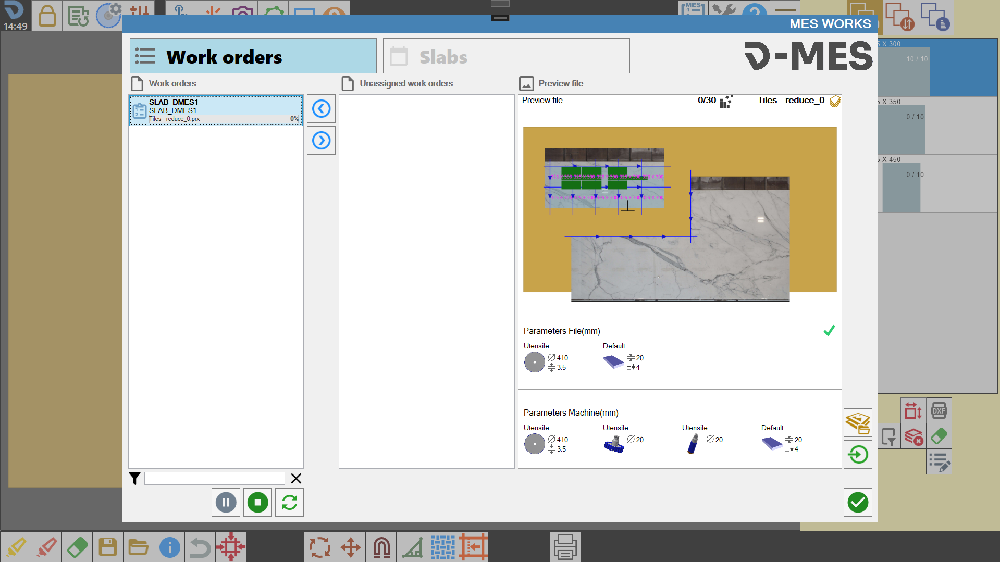
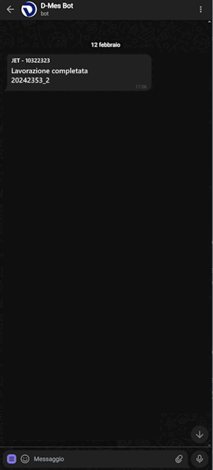

DMES PACKAGES
CONFIGURAZIONE
Il DMES è strutturato a pacchetti e può essere configurato in base alle esigenze del cliente.
il pacchetto comune a tutte le configurazioni è il pacchetto BASE:

I prezzi dei pacchetti sono da considerarsi in aggiunta, il prezzo complessivo sarà quindi la somma delle diverse opzioni selezionate. La costruzione del pacchetto prevede dei vincoli, ad esempio per il pacchetto “SLABS” è necessario aver acquistato DMES BASE _ LABEL.
Indice | Nome prodotto | Link a descrizione | Prezzo iniziale | Prezzo di rinnovo |
|---|---|---|---|---|
1 | DMES - CORE | |||
2 | TRACE | |||
3 | MATRIX | |||
4 | PRO | |||
Pacchetti e opzioni aggiuntive | ||||
5 | NOTIFICHE | |||
6 | Aggiunta di n_1 macchina Donatoni | |||
7 | Aggiunta di una stazione manuale e installazione del SW D-MES Station su hardware del cliente | |||
8 | Aggiunta di n_1 macchina NON Donatoni con interfaccia 4.0 | |||
9 | Aggiunta di una macchina NON Donatoni SENZA interfaccia 4.0 | |||
CONDIZIONI DI UTILIZZO E RINNOVI:
DONATONI MES è accessibile, tramite dispositivi compatibili, con licenza d'uso, non esclusiva e non trasferibile, soggetta alle condizioni d’uso.
La proprietà del Software, e di ogni diritto non espressamente concesso, sono e rimarranno di spettanza di Donatoni Macchine (e/o dei relativi fornitori di software).
Gli oneri di connessione fisica ed i costi di connettività sono a carico del cliente.
I servizi DONATONI MES sono forniti all'Acquirente per un periodo di 12 mesi dal momento della loro attivazione, saranno rinnovati automaticamente a titolo oneroso al prezzo di listino, salvo intervenga disdetta dell'Acquirente entro 30 giorni prima della fine della validità del servizio.
Nel caso in cui il servizio DONATONI MES non venga rinnovato vengono bloccate alcune funzionalità del software.
Servizi di aggiornamento e assistenza:
Aggiornamento all’ultima revisione
Risoluzione bug
Assistenza remota
Il prezzo per i rinnovi, potrebbe subire variazioni a seconda delle esigenze di mercato o in correlazione a variazioni dei costi di produzione, del personale o dei servizi accessori, fatte salve eventuali disposizioni legislative con impatti sui prezzi di vendita.
CORE
Rappresenta il pacchetto minimo di selezione del prodotto DMES, cosa comprende:
DASHBOARD
Pagina di riepilogo delle macchine e stazione connesse al DMES qui posso vedere lo stato della macchine, su cosa sta lavorando e alcuni dati di produzione.

INFORMAZIONI DI AREA
Pagina dettagliata della macchine dove posso visualizzare i dati in realtime e i dati di produzione come il numero di pezzi prodotti e i mq di lastra tagliati

ALLARMI
In questa pagina posso controllare lo storico degli allarmi che la macchina ha avuto in un certo periodo

PRODUZIONE
Pagina dedicata ai dati di produzione in un certo periodo di tempo, posso visualizzare quante lastre sono state fatte giornalmente e inserirei un obbiettivo di produzione ideale.

INVIO FILE DI LAVORO
Pagina di gestione dei file di lavoro, qui posso selezionare un file dxf, csv o iso e inviarlo in macchine per la lavorazione

REPORT
Pagina dedicata alla reportistica, posso cercare il nome di un file di lavorazione e generare un report pdf o csv

DMES BASE - descrizione CRM
Grazie all’interconnessione della produzione, DONATONI MES BASE consente, in un unico pannello di controllo, di conoscere in tempo reale lo stato di tutte le macchine e/o delle aree di lavoro gestite
Funzionalità:
DASHBOARD COMPLESSIVA: Pagina di riepilogo delle macchine e stazioni connesse al DMES, permette di vedere lo stato della macchine, il nome del lavoro in corso e vari dati di produzione.
DETTAGLI DELLE SINGOLE MACCHINE
INFORMAZIONI DI AREA: pagina dettagliata della macchine dove posso visualizzare i dati in realtime e i dati di produzione come il numero di pezzi prodotti e i mq di lastra tagliati
ALLARMI: mostra lo storico degli allarmi che la macchina ha avuto in un certo periodo
PRODUZIONE: pagina dedicata ai dati di produzione in un certo periodo di tempo, si possono visualizzare quante lastre sono state fatte giornalmente e inserire un obbiettivo di produzione ideale.
INVIO FILE DI LAVORO: pagina di gestione dei file di lavoro, qui si può selezionare un file dxf, csv o iso e inviarlo in macchina per la lavorazione
REPORT: Pagina dedicata alla reportistica, ci sono a dispoizione diversi filtri e si può cercare ad esempio il nome di un file di lavorazione e generare un report pdf o csv.
La fornitura comprende:
Installazione del software DMES (da remoto)
Licenza annuale del software DMES
Installazione n°1 macchina Donatoni
Training da remoto (2 ore)
La fornitura NON include l'hardware, è necessario un Server Windows o PC Windows
Requisiti minimi:
Windows 10 o Windows Server 2019
Processore I5 o superior
RAM 8giga
50 GB di spazio libero sul disco
CONDIZIONI DI UTILIZZO E RINNOVI:
DONATONI MES è accessibile, tramite dispositivi compatibili, con licenza d'uso, non esclusiva e non trasferibile, soggetta alle condizioni d’uso.
I servizi DONATONI MES sono forniti all'Acquirente per un periodo di 12 mesi dal momento della loro attivazione , saranno rinnovati automaticamente a titolo oneroso al prezzo di listino, salvo intervenga disdetta dell'Acquirente entro 30 giorni prima della fine della validità del servizio.
Nel caso in cui il servizio DONATONI MES non venga rinnovato vengono bloccate alcune funzionalità del software.
Il prezzo per i rinnovi, potrebbe subire variazioni a seconda delle esigenze di mercato o in correlazione a variazioni dei costi di produzione, del personale o dei servizi accessori, fatte salve eventuali disposizioni legislative con impatti sui prezzi di vendita.
SOFTWARE INSTALLATI
I Software sono licenziati senza esclusiva e dovranno essere utilizzabili per le sole licenze acquistate, escluso ogni diritto di trasferimento o sub licenza. La proprietà del Software, e di ogni diritto non espressamente concesso, sono e rimarranno di spettanza di Donatoni Macchine (e/o dei relativi fornitori di software).
Gli oneri di connessione fisica ed i costi di connettività sono a carico del cliente.
TRACE
Pacchetto per la gestione delle etichette
PACCHETTO MINIMO: BASE
La fornitura comprende solo la parte software di gestione e non comprende la stampante e i consumabili.
ETICHETTA PERSONALIZZATA
Posso personalizzare le etichette in base al cliente al tipo di etichetta e alle informazioni che voglio stampare

STAMPA
Posso stampare le etichette per i pezzi

MATRIX
Pacchetto dedicato alla gestione delle lastre da lavorare, non è un magazzino fiscale ma solo operativo.
Le varie integrazioni descritte in seguito richiedono l’installazione a parte dei software richiamati (D-SLAB, PARAMETRIX, PROJECT MATCH)
PACCHETTO MINIMO: BASE _ LABEL
VISUALIZZAZIONE DELLE LASTRE
Visualizzo le lastre presenti nel DMES applicando qualche filtro, posso creare nuove lastre o importarle da file

CERCA LASTRE
In questa pagina posso avviare una ricerca avanzata delle lastre inserendo diversi filtri per materiale, colore, spessore, finitura, etc e anche ordinamenti

ETICHETTE
Dal DMES è possibile stampare le etichette delle lastre dove è necessario, il layout è personalizzabile dall’utente

INTERGRAZIONE CON D-SLAB
Integrazione con la cavalletta fotografica, le lastre che vengono fotografate sono poi memorizzate nel DMES

INTEGRAZIONE CON PARAMETRIX SELEZIONE LASTRE
Integrazione con il Parametrix per la selezione delle lastre e la programmazione, posso applicare filtri per materiale, spessore, etc e vedere se una lastra è utilizzata o meno.

INTEGRAZIONE CON PARAMETRIX PROJECT MATCH
Se disponibile l’optional Project Match in Parametrix posso utilizzare il DMES e la selezione delle lastre per posizionare in automatico le lastre nelle zone di lavoro, le lastre poi sono programmate e pronte per il lavoro in macchina.

Apro le lastre programmate in macchine

PRO
PACCHETTO MINIMO: BASE _ LABEL _ SLABS
PACCHETTO PER LA GESTIONE DELLA PRODUZIONE INTESA COME COMMESSE E CICLI DI LAVORO
D-MES _ JOBS è lo strumento aziendale che aiuta a snellire le attività di gestione della produzione e consente di concentrarsi sugli elementi di valore del tuo business.
Gestire la produzione in maniera attenta è la base di tutte le attività per raggiungere gli obiettivi aziendali di fatturato e soprattutto di marginalità. Al contempo garantire un servizio preciso e puntuale permette di fidelizzare i clienti ed accrescere la propria credibilità.
Le diverse funzionalità sono descritte nei paragrafi successivi con l’ausilio di immagini.
Il pacchetto JOBS si deve integrare, modifica e automatizza alcuni processi aziendali; necessita quindi di analisi e confronto con le varie figure aziendali per una corretta e funzionale impostazione del sistema.
La fornitura del pacchetto aggiuntivo comprende:
4 giornate uomo per l’analisi, la configurazione del sistema, piccole personalizzazioni e spiegazioni sull’utilizzo del software, giornate generalmente adatte per installazione e configurazione di un sistema fino a 5 aree di lavoro e 10 macchine. Il cliente verrà preventivamente informato quando, dall’esito di analisi o dall’avanzamento lavori, ci dovessero essere criticità.
La fornitura NON INCLUDE:
personalizzazioni particolari
installazione su hardware non adatto
costi di viaggio, vitto e alloggio per lavori presso il cliente
COMMESSE
Pagina di gestione delle commesse, posso creare una nuova commessa o modificarne una già presente

PEZZI DA DXF, CSV
I pezzi da produrre per le commesse possono essere importati da file dxf o csv

CICLO DI LAVORO
Nella commessa posso inserire il ciclo di lavoro dei vari pezzi

sono disponibili anche informazioni sui file caricati della commessa nella pagina info

ASSEGNAZIONE LASTRE
Alla commessa posso assegnare le lastre da utilizzare

REPORT
Posso stampare un report riassuntivo di commessa

ETICHETTE
Posso stampare etichette relative alla commessa con informazioni quali nome, data, etc
oppure etichette per i pezzi

INTEGRAZIONE CON PARAMETRIX UFFICIO
Nel ciclo di lavoro può essere incluso anche la programmazione in ufficio con Parametrix
Quindi la possibilità di completare il nesting dei pezzi sulle lastre

Le lastre programmate vengono poi riportate a DMES come pronte per il taglio in fresa.

PROGRESSIONE COMMESSA
Posso visualizzare lo stato di avanzamento della commessa e di ogni singolo pezzo

STAZIONI
La gestione delle commessa e lo stato di avanzamento sono disponibili anche per le stazioni manuali

In ogni stazione posso visualizzare i dettagli di ogni commessa, posso avviare attività, metterle in pausa e completare le operazioni previste per quella stazione

Inoltre posso visualizzare file di commessa, pdf, dxf, immagini e altro

NOTIFICHE
Pacchetto per la gestione delle notifiche via telegram
PACCHETTO MINIMO: BASE
NOTIFICHE ERRORI MACCHINA
Sul telefono vengono ricevute notifiche in relazione a particolari eventi sulla macchina, allarmi, warning, etc

NOTIFICHE COMMESSE
Se presente anche il pacchetto di gestione delle commesse posso ricevere notifiche di progressione della commessa o di completamento


RICHIESTA REPORT
Con dei comandi specifici posso richiedere dei report via telegram

Anche in formato pdf

MACCHINE AGGIUNTIVE E AREA MANUALE
Compito del software DMES è gestire più macchine e aree di lavoro. I tempo di configurazione e di installazione del software dipendono da quante macchine vengono controllate. Vengono quindi associati dei costi per aggiungere macchine
Aggiunta di n°1 macchina Donatoni | Le macchine Donatoni dal 2019 sono predisposte per il collegamento col DMES e il tempo necessario è breve |
Aggiunta di una stazione manuale e installazione del SW D-MES Station su hardware del cliente | Nelle aree manuali è necessario installare il software DMES Station per permettere all’operatore di interagire con il software. E' necessario che il cliente predisponga un PC da posizionare nell’area di lavoro |
Aggiunta di n°1 macchina NON Donatoni con interfaccia 4.0 | Le macchine non Donatoni devono essere studiate per capire la difficoltà dell’integrazione, generlamente se la macchina dispone di un’interfaccia 4.0 il collegamento non dovrebbe essere problematico |
Aggiunta di una macchina NON Donatoni SENZA interfaccia 4.0 | Per macchine non Donatoni e senza predisposizione per il 4.0 c'è da studiare e implementare una soluzione specifica |
Varie
Mail del 02/08/2024, riferimento commerciale